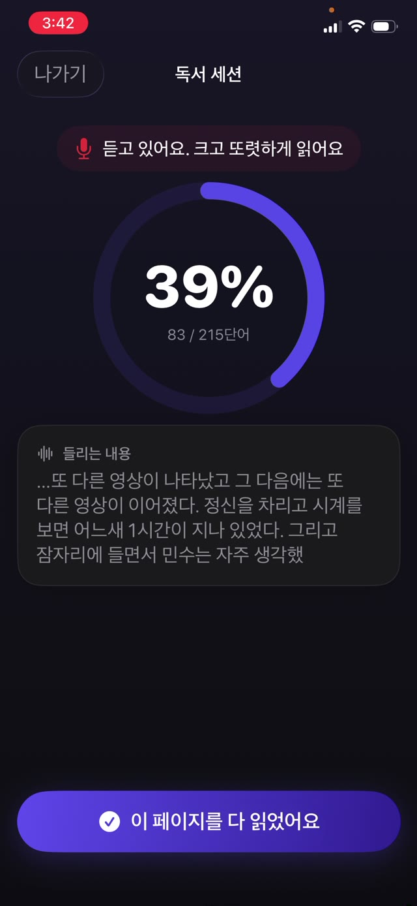

중요한 이유는 해독과 이해 사이의 다리이기 때문입니다. 글자를 소리로 바꾸는 데 주의를 전부 쓰는 아이에게는 문장의 뜻에 쓸 여력이 남지 않습니다. 그것을 기르는 연습은 단순하고, 오래됐고, 조금 촌스럽습니다. 대부분의 날에, 소리 내어 10분쯤 읽는 것.


유창성의 세 부분
- 정확성. 형태가 암시하는 단어가 아니라 실제로 쪽에 있는 단어를 읽는 것.
- 속도. 대화하는 정도의 속도. 너무 느리면 문장이 조각나고, 내달리면 대개 이해를 놓았다는 뜻입니다.
- 표현. 쉼표에서 멈추고, 물음표에서 올리고, 인물에 목소리를 주는 것. 이해를 증명하는 부분입니다.
왜 소리 내어, 왜 당신에게
묵독은 모든 것을 감춥니다. 아이가 10분 동안 쪽 위로 눈만 움직이고 아무것도 흡수하지 않을 수 있는데, 둘 다 알 수 없습니다.
소리 내어 읽으면 과정이 들립니다. 건너뛴 단어, 첫 글자만 보고 찍은 단어, 문장이 무너지는 자리가 들립니다. 실수를 그 순간에 잡을 수 있는 유일한 방식이기도 합니다.
10분 루틴
- 좌절 수준보다 살짝 낮은 책을 고르세요. 유창성 연습에는 대체로 읽어 낼 수 있는 글이 필요합니다. 맞서 싸워야 하는 글이 아니라요.
- 10분 타이머를 맞추세요. 끝이 분명해지고 협상 대상이 아니게 됩니다.
- 소리 내어 읽게 하세요. 들릴 만큼 가까이 앉고, 침묵을 채우고 싶은 마음을 참으세요.
- 뜻이 사라지지 않는 한 문장 중간에 끊지 말고 실수를 기억해 두세요.
- 끝나면 무슨 일이 있었는지 진짜 질문을 하나 하세요. 하나요. 시험이 아닙니다.
망치지 않고 고쳐 주는 법
모든 실수에 달려들고 싶어집니다. 그러지 마세요. 끊임없이 고쳐 주면 읽기는 채점받는 발표가 되고, 아이들은 채점받는 일에서 빠집니다.
문장이 끝날 때까지 기다리세요. 실수에도 뜻이 살아남았다면 그냥 두세요. 살아남지 못했다면 그 단어를 말해 주고 설명 없이 넘어가세요. 설명은 나중에, 그것도 반복되는 것들에 대해서만 하면 됩니다.
초시계 없이 진전 보기
분당 단어 수는 학교가 재는 지표이고, 집에서 좇기에는 나쁜 숫자입니다. 시간을 재는 아이는 내달리는 법을 배웁니다. 몇 주에 걸쳐 보고 싶은 것은 더 매끄러운 끊어 읽기, 같은 단어에서 덜 걸리는 것, 더 많아진 표현입니다.
무엇을 언제 읽었는지에 대한 간단한 기록이면 충분합니다. 연습이 실제로 일어나고 있는지를 알려 주고, 그것이 가장 중요한 변수입니다.
스스로 기록을 남기는 연습
Guardian Reader는 아이가 스캔한 쪽을 소리 내어 읽는 동안 들으며 그 쪽의 정확한 본문과 비교하고, 진행되는 동안 일치율을 실시간으로 보여 줍니다. 통과 기준은 조절할 수 있어서, 읽기를 배우는 아이가 청소년의 기준에 맞춰지지 않습니다.
모든 세션은 날짜, 분, 쪽수, 그리고 실제로 읽은 단어와 함께 저장되어, 아무도 표를 채우지 않아도 한 학년 동안의 연습에 대한 정직한 그림이 됩니다.